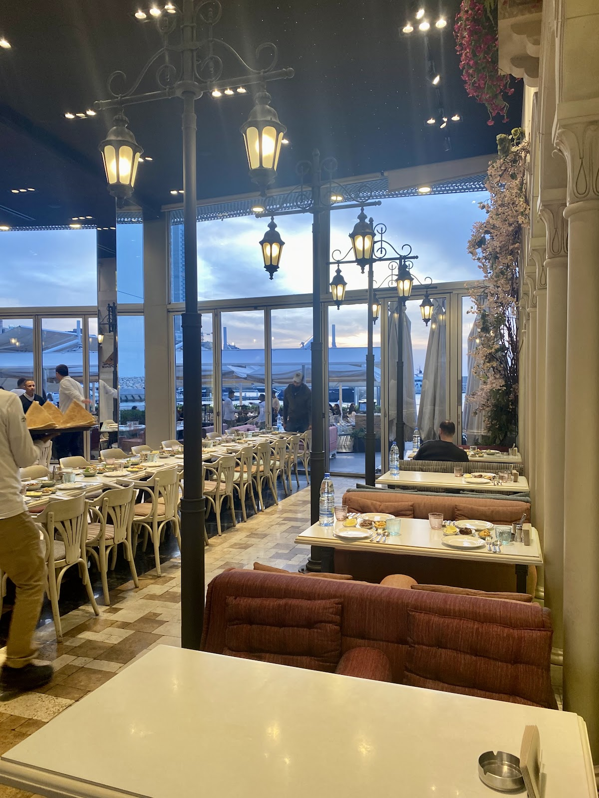
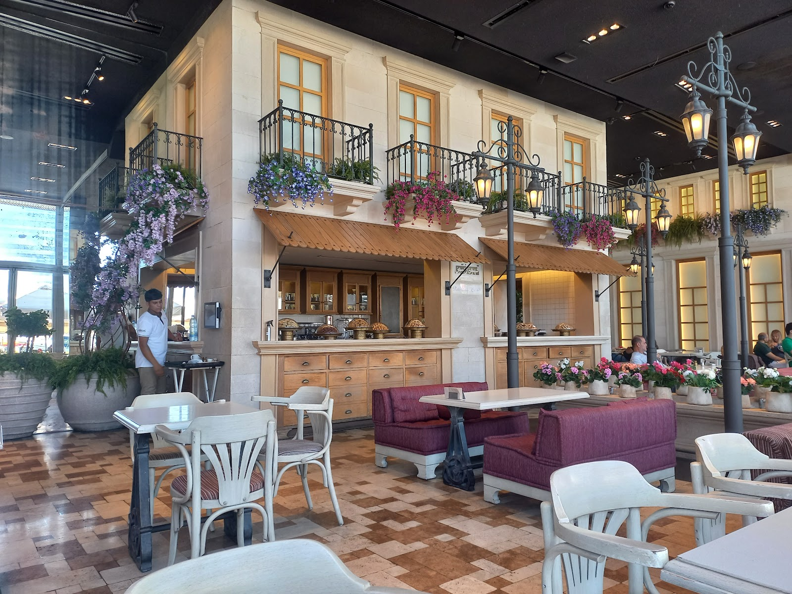
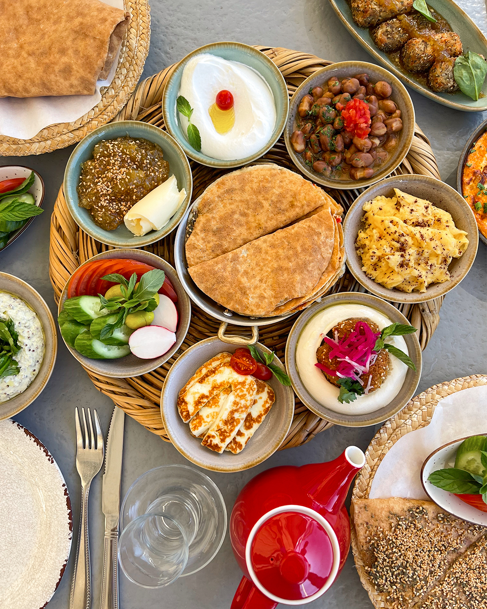
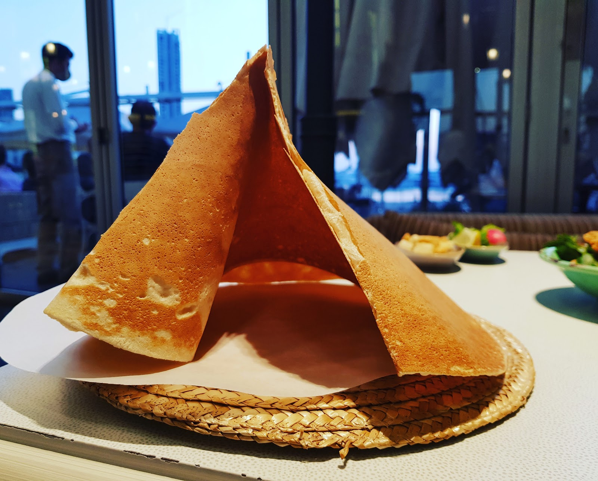
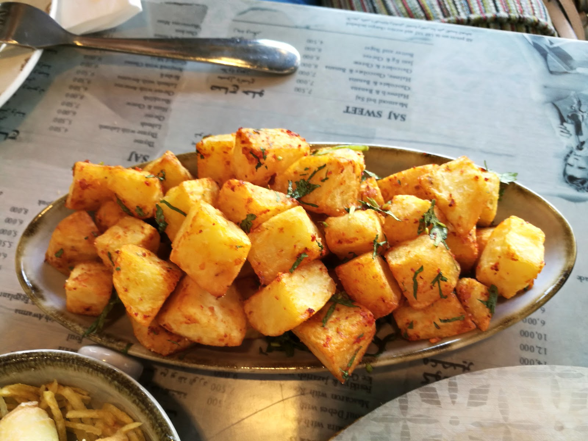
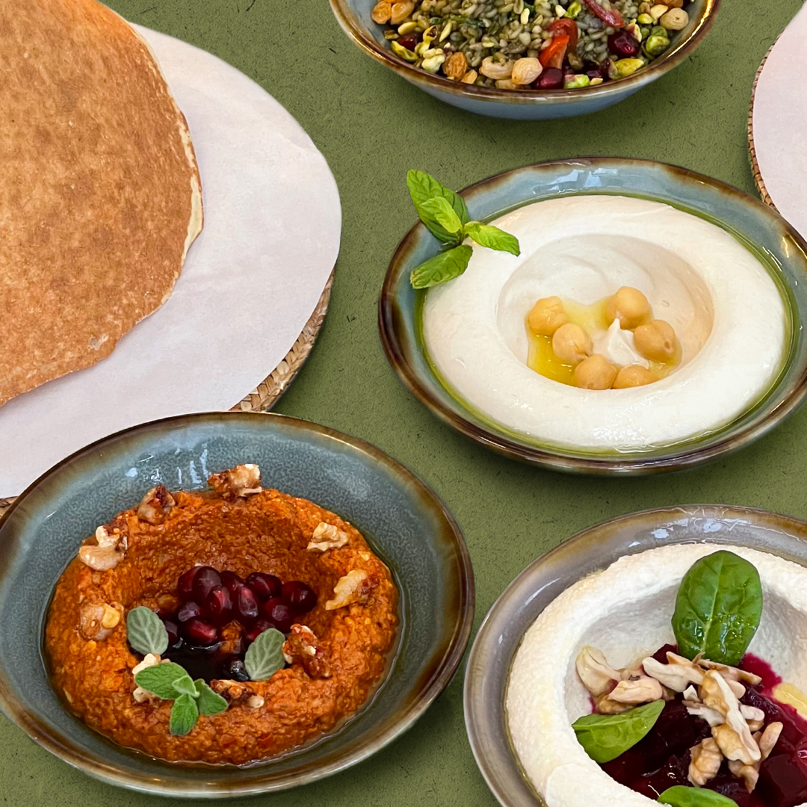

★ 4.7




9 AM
1 AM

One of the best restaurants that I visited during my stay in Beirut. The place is so nice, decorations are amazing and the food is so delicious.Bouta Sameh
Amazing food, excellent customer service special thanks to Assaf for the warm and attentive hospitality. The ambiance is lovely, and the music creates the perfect atmosphere. Highly recommended!Hiba M. Hammoud
I went to have breakfast in Zaytouna bay, I heard they have a cool lebanese formula for 2 people. I tried it and it was so yummy and fullfilling portion for a veryy fair price! I recommend it with some turkish coffee!Teya Reviews
| 9 AM–1 AM | |
| 9 AM–1 AM | |
| 9 AM–1 AM | |
| 9 AM–1 AM | |
| 9 AM–1 AM | |
| 9 AM–1 AM | |
| 9 AM–1 AM |
Zeitouna Bay, Minet El Hosn, Beirut
+961 1 370 356